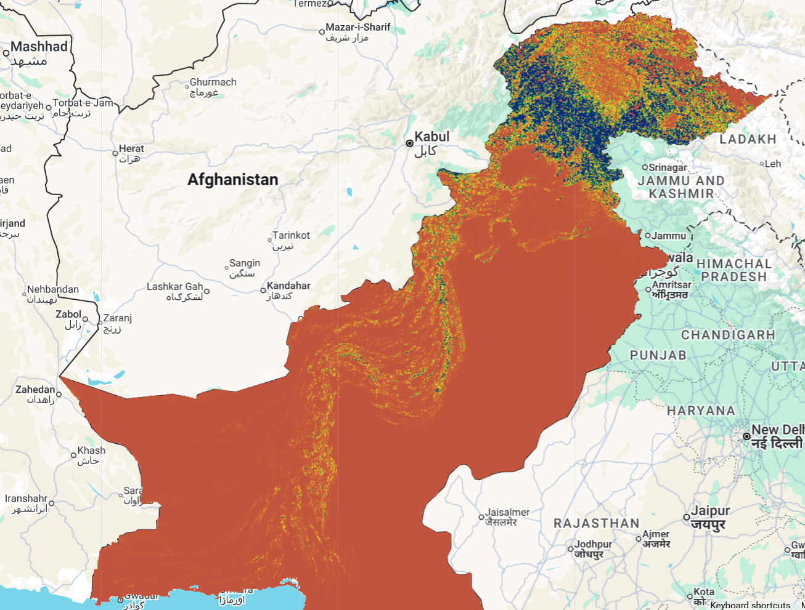
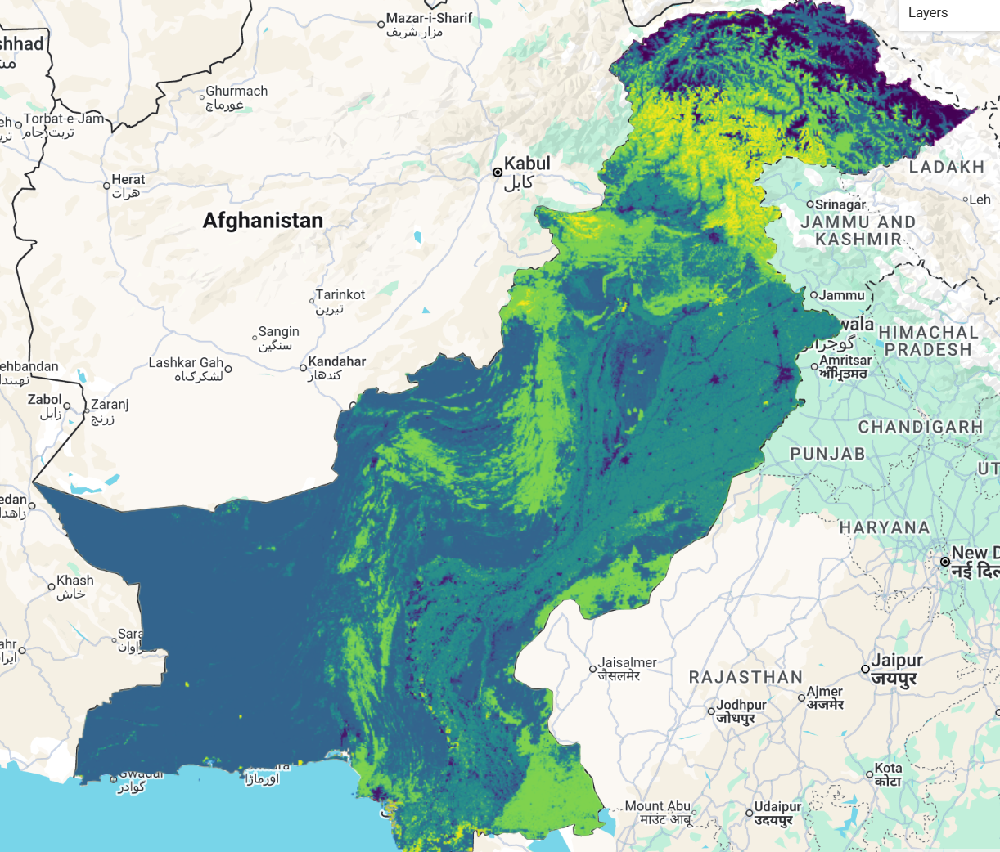
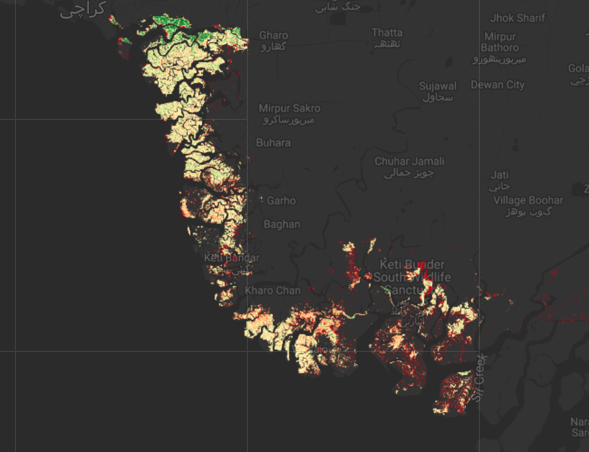
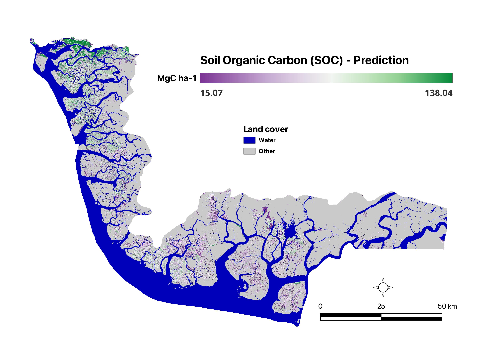
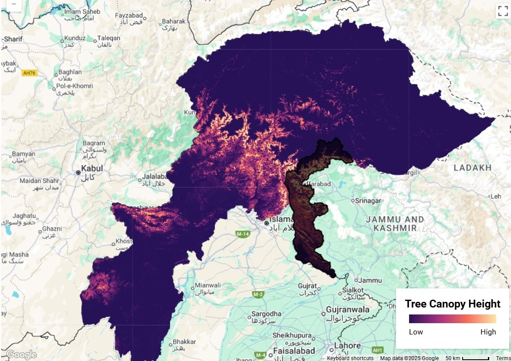
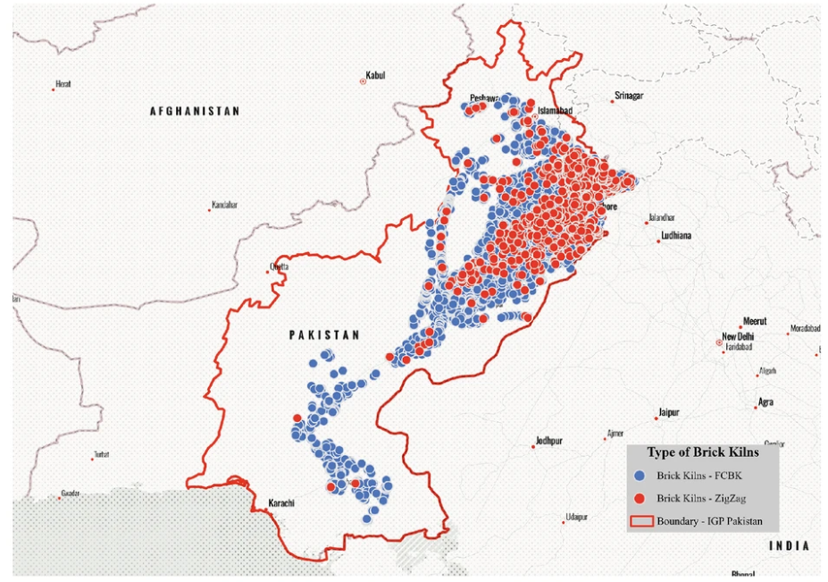

Catalogue
Datasets Repository
Every dataset below is openly available from its original publisher. Click through for licensing terms, full documentation, and downloads.

Comprehensive assessment of soil erosion dynamics in Pakistan for 2005 and 2015 using the RUSLE model, considering six key influencing factors.
 Zenodo
Zenodo

Urbanization-led land cover change and its impact on terrestrial carbon storage capacity — a high-resolution, nation-wide assessment in Pakistan from 1990 to 2020.

Urbanization-led land cover change and its impact on terrestrial carbon storage capacity — a high-resolution, nation-wide assessment in Pakistan from 1990 to 2020.

Spatial distribution of mangrove soil organic carbon in the Indus Delta, the world's largest arid mangrove forest system, using a multi-sensor remote sensing and machine learning approach.

Canopy height mapping in the Western Himalayas using a deep learning approach that fuses GEDI LiDAR with Sentinel-2 imagery — a key biodiversity hotspot needing accurate aboveground biomass estimates.

First geospatial mapping of brick kiln sites across Pakistan's IGP region, capturing precise locations in WGS 84 along with preliminary emissions estimates (PM10, PM2.5, NOx, SOx) and proximity-based exposure data.
Get In Touch
Feature Your Dataset
Have a geospatial dataset related to Pakistan that you'd like featured on GeoDROP? We welcome contributions from researchers, institutions, and organizations. Reach out to us and we'll get back to you as soon as possible.
Contact us at
geoscapeanalyticslab@gmail.comWhen reaching out, please include:
- Dataset name and brief description
- Coverage area and time period
- Data format (TIF, SHP, CSV, etc.)
- Download or Zenodo link
- Associated paper (if any)
About
About Our Lab
GSAL (GeoScape Analytics Lab) is a research collective working on geospatial analytics for Pakistan. We build open pipelines around remote sensing, hydrology, and demographic data to support researchers, journalists, and policymakers. This site is our living index of the open datasets we rely on day-to-day.
All datasets credited above belong to their respective owners and remain under their original licenses. We only host curation, metadata, and processing recipes.